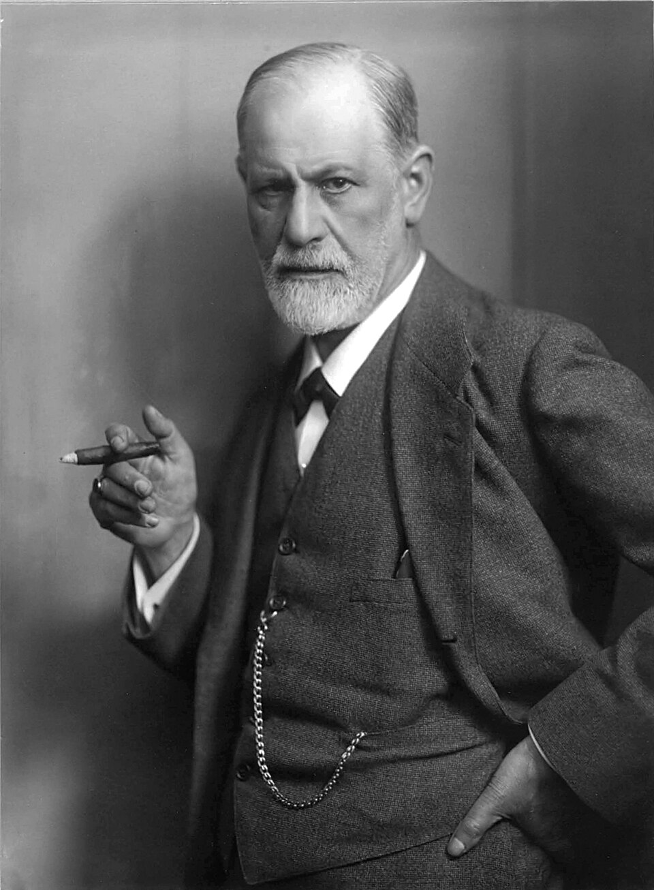

| Полное имя | Зигисму́нд Шломо Фройд |  |
| Дата рождения | 6 мая 1856 | |
| Дата смерти | 23 сентября 1939 | |
| Место рождения/Место смерти | Пршибор, Моравская марка, Австрийская империя/Лондон, Великобритания | |
| Ученая степень/Ученое звание | Доктор медицины/Пофессор | |
| Известен как | Основатель психоанализа | |
| Род деятельности | Психоаналитик, невролог, эссеист | |
| Подпись |